Figure 2#
Mice can learn to discriminate objects based on luminance in a motion-parallax correct virtual reality world.#
For reference, here is the full figure
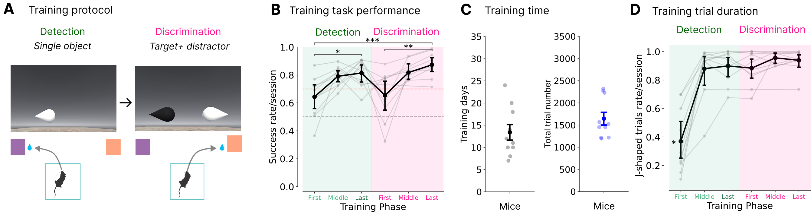
and corresponding supplemental figure
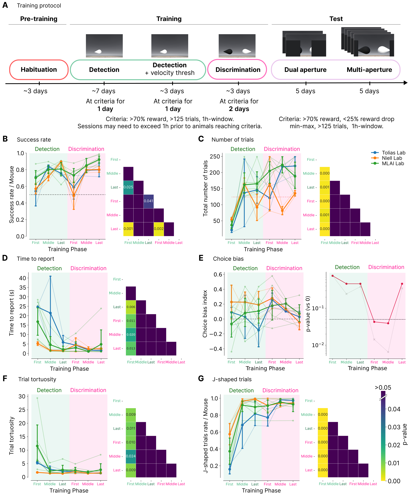
cd "/app/"
/app
/app/.venv/lib/python3.9/site-packages/IPython/core/magics/osm.py:417: UserWarning: using dhist requires you to install the `pickleshare` library.
self.shell.db['dhist'] = compress_dhist(dhist)[-100:]
%run env_aws.py
%run run.py connect
/app/.venv/lib/python3.9/site-packages/datajoint/plugin.py:2: UserWarning: pkg_resources is deprecated as an API. See https://setuptools.pypa.io/en/latest/pkg_resources.html. The pkg_resources package is slated for removal as early as 2025-11-30. Refrain from using this package or pin to Setuptools<81.
import pkg_resources
[2026-02-17 13:04:19,713][INFO]: Connecting admin@vr4mice-ar-collab.cluster-cn54f38qpzgm.eu-central-1.rds.amazonaws.com:3306
[2026-02-17 13:04:19,915][INFO]: Connected admin@vr4mice-ar-collab.cluster-cn54f38qpzgm.eu-central-1.rds.amazonaws.com:3306
from vr4mice.schema.base_analysis import DataFrame
import pandas as pd
import matplotlib.pyplot as plt
import seaborn as sns
import numpy as np
from scipy import stats
from vr4mice.analysis import plotting
from base_schemas.schemas.exp import Session
from vr4mice.schema.session_metrics import SessionMetrics
from vr4mice.analysis.analysis import style
from vr4mice.analysis.utils import get_training_stage_per_mouse
from vr4mice.analysis.stats import plot_training_stats_heatmap
import statsmodels.api as sm
from statsmodels.formula.api import ols
import statsmodels.formula.api as smf
style()
/app/.venv/lib/python3.9/site-packages/tqdm/auto.py:21: TqdmWarning: IProgress not found. Please update jupyter and ipywidgets. See https://ipywidgets.readthedocs.io/en/stable/user_install.html
from .autonotebook import tqdm as notebook_tqdm
save_fig_path = "notebooks/Paper_figures/Figure_output/"
data = []
for stage in ["ar_detection_no_velthr", "ar_detection_velthr", "ar_discrim"]:
training = (vr4mice.Groups() * vr4mice.Labels() & (vr4mice.Dataset() & f'session_label = "{stage}"')).fetch("dataset", as_dict=True)
for d in training:
dataset_name = d["dataset"]
print(dataset_name)
df = pd.DataFrame((SessionMetrics() & f'dataset = "{dataset_name}"').fetch(as_dict = True))
split_d = dataset_name.split("_")
df["mouse_name"] = split_d[0]
df["date"] = split_d[1]
df["attempt"] = split_d[2]
df["training_stage"] = stage
df["lab_id"] = ((vr4mice.Collab() & f'dataset = "{dataset_name}"') * vr4mice.Labs()).fetch("lab")[0]
data.append(df)
big_df = pd.concat(data)
big_df["session_increment"] = (
big_df.groupby("mouse_name")["dataset"]
.rank(method="dense", ascending=True)
.astype(int)
)
# remove failed session need to correct in datajoint - there was a second attempt run I need to correct its label
big_df = big_df [big_df.dataset != "Lemming_2024-08-09_1"].copy()
combined_training_df = []
for mouse_name in big_df.mouse_name.unique():
tmp_df = get_training_stage_per_mouse(big_df, mouse_name)
combined_training_df.append(tmp_df)
session_df = pd.concat(combined_training_df)
31726_2025-02-06_1
31726_2025-02-07_1
31726_2025-02-10_1
31726_2025-02-11_1
31726_2025-02-12_1
31726_2025-02-13_1
31728_2025-02-06_1
31728_2025-02-07_1
31728_2025-02-10_1
31728_2025-02-11_1
31728_2025-02-12_1
31728_2025-02-13_1
J729_2024-11-09_1
J729_2024-11-10_1
J729_2024-11-11_1
J729_2024-11-12_1
J729_2024-11-13_1
J729_2024-11-14_1
J729_2024-11-15_1
J729_2024-11-16_1
J729_2024-11-17_1
J731_2024-11-09_1
J731_2024-11-10_1
J731_2024-11-11_1
J731_2024-11-12_1
J731_2024-11-13_1
J731_2024-11-14_1
J731_2024-11-15_1
J731_2024-11-16_1
J731_2024-11-17_1
Jacana_2024-07-28_1
Jacana_2024-07-29_2
Jacana_2024-07-30_1
Jacana_2024-07-31_1
Jacana_2024-08-01_1
Jacana_2024-08-02_1
Jacana_2024-08-05_2
Jacana_2024-08-06_1
Jacana_2024-08-07_1
Kiwi_2024-07-26_1
Kiwi_2024-07-27_1
Kiwi_2024-07-28_1
Kiwi_2024-07-29_1
Kiwi_2024-07-30_1
Kiwi_2024-07-31_1
Kiwi_2024-08-01_1
Lemming_2024-07-27_1
Lemming_2024-07-28_1
Lemming_2024-07-29_2
Lemming_2024-07-30_1
Lemming_2024-07-31_1
Lemming_2024-08-01_1
Nightingale_2024-07-27_1
Nightingale_2024-07-28_1
Nightingale_2024-07-29_2
Nightingale_2024-07-30_1
Nightingale_2024-07-31_1
Nightingale_2024-07-31_2
Nightingale_2024-08-01_1
Oribi_2024-08-08_1
Oribi_2024-08-09_1
Oribi_2024-08-10_1
Oribi_2024-08-11_1
Oribi_2024-08-12_1
Pheasant_2024-08-08_1
Pheasant_2024-08-09_1
Pheasant_2024-08-10_1
Pheasant_2024-08-11_1
31726_2025-02-14_1
31726_2025-02-18_1
31726_2025-03-03_1
31726_2025-03-04_1
31726_2025-03-05_1
31728_2025-02-14_1
31728_2025-02-18_1
J729_2024-11-18_1
J729_2024-11-19_1
J729_2024-11-20_1
J729_2024-11-21_1
J729_2024-11-22_1
J729_2024-11-23_1
J731_2024-11-18_1
J731_2024-11-19_1
J731_2024-11-20_1
J731_2024-11-21_1
J731_2024-11-22_1
J731_2024-11-23_1
J731_2024-11-27_1
J731_2024-11-28_1
Jacana_2024-08-08_2
Kiwi_2024-08-02_1
Kiwi_2024-08-05_1
Lemming_2024-08-05_1
Lemming_2024-08-06_3
Nightingale_2024-08-02_1
Nightingale_2024-08-06_1
Nightingale_2024-08-07_1
Oribi_2024-08-13_1
Pheasant_2024-08-12_1
31726_2025-03-06_1
31726_2025-03-07_1
31726_2025-03-10_1
31726_2025-03-11_1
31726_2025-03-12_1
31726_2025-03-14_1
31726_2025-03-17_1
31728_2025-03-03_1
31728_2025-03-04_1
J729_2024-11-24_1
J729_2024-11-25_1
J729_2024-11-26_1
J729_2024-11-27_1
J729_2024-11-28_1
J731_2024-11-24_1
J731_2024-11-25_1
J731_2024-11-26_1
J731_2024-11-30_1
J731_2024-12-01_1
J731_2024-12-02_1
J731_2024-12-03_1
Jacana_2024-08-09_1
Jacana_2024-08-10_1
Jacana_2024-08-11_1
Jacana_2024-08-12_1
Kiwi_2024-08-06_1
Kiwi_2024-08-07_1
Kiwi_2024-08-09_1
Lemming_2024-08-07_1
Lemming_2024-08-08_1
Lemming_2024-08-09_1
Nightingale_2024-08-08_2
Nightingale_2024-08-09_2
Oribi_2024-08-14_1
Oribi_2024-08-15_1
Pheasant_2024-08-13_1
Pheasant_2024-08-14_1
Mean Training plots#
# Linear Mixed Model (with Mouse)
lmm_model = smf.mixedlm("session_reward ~ C(num_train_stage)",
data=session_df, groups=session_df["mouse_name"]).fit(method='bfgs')
# Ordinary Least Squares (without Mouse)
ols_model = smf.ols("session_reward ~ C(num_train_stage)", data=session_df).fit()
# Likelihood Ratio Test
lr_stat = 2 * (lmm_model.llf - ols_model.llf)
p_val = stats.chi2.sf(lr_stat, df=1) # 1 degree of freedom for the random effect
print(f"LRT Statistic: {lr_stat:.4f}")
print(f"P-value for Mouse effect: {p_val:.4f}")
if p_val > 0.05:
print("Justification: Mouse identity does not significantly improve the model. Independent ANOVA is valid.")
else:
print("Caution: Mouse identity still explains significant variance.")
LRT Statistic: -27.5341
P-value for Mouse effect: 1.0000
Justification: Mouse identity does not significantly improve the model. Independent ANOVA is valid.
/app/.venv/lib/python3.9/site-packages/statsmodels/base/model.py:607: ConvergenceWarning: Maximum Likelihood optimization failed to converge. Check mle_retvals
warnings.warn("Maximum Likelihood optimization failed to "
/app/.venv/lib/python3.9/site-packages/statsmodels/regression/mixed_linear_model.py:2206: ConvergenceWarning: MixedLM optimization failed, trying a different optimizer may help.
warnings.warn(msg, ConvergenceWarning)
/app/.venv/lib/python3.9/site-packages/statsmodels/regression/mixed_linear_model.py:2218: ConvergenceWarning: Gradient optimization failed, |grad| = 1.070489
warnings.warn(msg, ConvergenceWarning)
/app/.venv/lib/python3.9/site-packages/statsmodels/regression/mixed_linear_model.py:2237: ConvergenceWarning: The MLE may be on the boundary of the parameter space.
warnings.warn(msg, ConvergenceWarning)
fig, ax = plt.subplots(1,1, figsize=(5,5))
plotting.plot_training_phases(ax, data=session_df, y="session_reward", ylabel="Success rate / Session")#, hue="mouse_name")
plt.savefig(save_fig_path + "figure2_reward_mouse.svg", transparent=True)
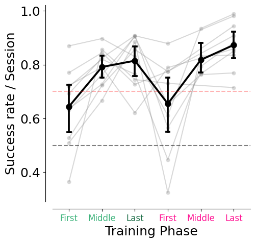
fig, ax = plt.subplots(1, 2, figsize=(10, 5))
plotting.plot_training_phases(ax[0], data=session_df, y="session_reward", ylabel="Success rate / Mouse", ylim=(0,1), hue="lab_id")
results = sm.stats.multicomp.pairwise_tukeyhsd(session_df.session_reward, session_df.num_train_stage, alpha=0.05)
plot_training_stats_heatmap(ax[1], results)
plt.savefig(save_fig_path + "figure2_success_rate.svg", transparent=True)
anova_rewarded = ols('session_reward ~ num_train_stage',
data=session_df).fit()
table = sm.stats.anova_lm(anova_rewarded, typ=1)
print("Anova", table)
Anova df sum_sq mean_sq F PR(>F)
num_train_stage 1.0 0.147007 0.147007 8.130146 0.006192
Residual 53.0 0.958333 0.018082 NaN NaN
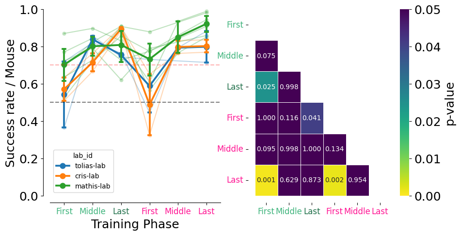
fig, ax = plt.subplots(1, 2, figsize=(10, 5))
plotting.plot_training_phases(ax[0], data=session_df, y="session_tortuosity", ylabel="Trial tortuosity", hue="lab_id")
results = sm.stats.multicomp.pairwise_tukeyhsd(session_df.session_tortuosity, session_df.num_train_stage, alpha=0.05)
plot_training_stats_heatmap(ax [1], results)
plt.savefig(save_fig_path + "figure2_tortuosity.svg", transparent=True)
anova_rewarded = ols('session_tortuosity ~ num_train_stage',
data=session_df).fit()
table = sm.stats.anova_lm(anova_rewarded, typ=1)
print("Anova", table)
Anova df sum_sq mean_sq F PR(>F)
num_train_stage 1.0 138.855866 138.855866 8.328483 0.005634
Residual 53.0 883.637602 16.672408 NaN NaN
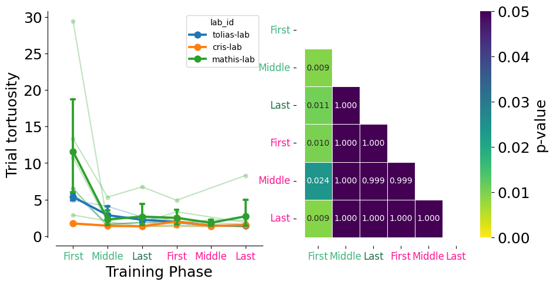
fig, ax = plt.subplots(1,2, figsize=(10,5))
plotting.plot_training_phases(ax[0], data=session_df, y="session_trial_duration", ylabel="Time to report (s)", hue="lab_id")
results = sm.stats.multicomp.pairwise_tukeyhsd(session_df.session_trial_duration, session_df.num_train_stage, alpha=0.05)
plot_training_stats_heatmap(ax [1], results)
plt.savefig(save_fig_path + "figure2_trial_duration.svg", transparent=True)
anova_rewarded = ols('session_trial_duration ~ num_train_stage',
data=session_df).fit()
table = sm.stats.anova_lm(anova_rewarded, typ=1)
print("Anova", table)
Anova df sum_sq mean_sq F PR(>F)
num_train_stage 1.0 773.058815 773.058815 11.271117 0.001463
Residual 53.0 3635.142448 68.587593 NaN NaN
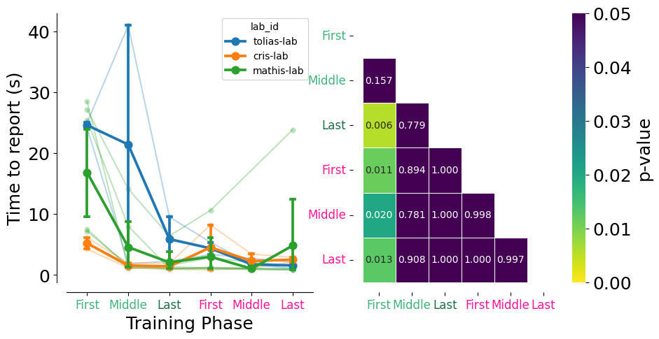
session_df["session_bias_index"] = 2 * session_df["session_bias"] - 1
fig, ax = plt.subplots(1,2, figsize=(10,5))
plotting.plot_training_phases(
ax[0],
data=session_df,
y="session_bias_index",
ylabel="Choice bias index",
ylim=(1, -1),
hue="lab_id",
)
ax[0].hlines(0.0, xmin=0, xmax=session_df.num_train_stage.max(), color="grey", linestyle="--")
# One-sample t-test of bias against 0 (null) per training stage
stage_tests = []
for stage in sorted(session_df.num_train_stage.unique()):
vals = session_df.loc[session_df.num_train_stage == stage, "session_bias_index"]
t_stat, p_val = stats.ttest_1samp(vals, 0)
stage_tests.append({
"num_train_stage": stage,
"n": len(vals),
"mean_bias": vals.mean(),
"t_stat": t_stat,
"df": max(len(vals) - 1, 0),
"p_value": p_val,
})
stage_tests_df = pd.DataFrame(stage_tests)
print("One-sample t-tests vs 0 (bias)")
print(stage_tests_df)
# Plot p-values only (no bar/box)
ax[1].plot(stage_tests_df["num_train_stage"], stage_tests_df["p_value"],
marker="o", linestyle="-", color="k")
ax[1].axhline(0.05, color="grey", linestyle="--")
ax[1].set_xlabel("Training stage")
ax[1].set_ylabel("p-value (vs 0)")
# Define tick positions and labels
stage_positions = np.arange(6)
stage_labels = ["First", "Middle", "Last", "First", "Middle", "Last"]
stage_colors = [
"#3FB47C",
"#3FB47C",
"#1F6F49",
"#FF1493",
"#FF1493",
"#FF1493",
]
ax[1].set_xticks(stage_positions)
ax[1].set_xticklabels(stage_labels, rotation=0, fontsize=12)
# Color the x-tick labels
for j, label in enumerate(ax[1].get_xticklabels()):
label.set_color(stage_colors[j])
plt.savefig(save_fig_path + "figure2_bias.svg", transparent=True)
One-sample t-tests vs 0 (bias)
num_train_stage n mean_bias t_stat df p_value
0 0 10 0.024020 0.315024 9 0.759925
1 1 10 0.099960 1.243030 9 0.245264
2 2 10 0.072631 0.913433 9 0.384832
3 3 10 0.215386 3.028606 9 0.014279
4 4 5 0.156937 5.195691 4 0.006535
5 5 10 0.042537 0.990603 9 0.347763
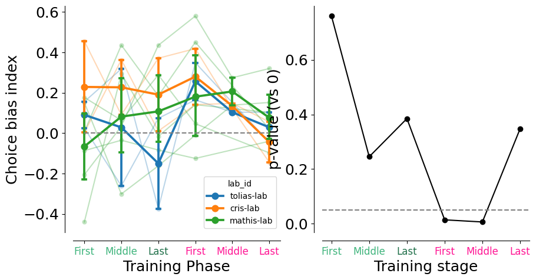
from statsmodels.stats.multitest import multipletests
session_df["session_bias_index"] = 2 * session_df["session_bias"] - 1
# One-sample t-test of bias against 0 (null) per training stage
stage_tests = []
for stage in sorted(session_df.num_train_stage.unique()):
vals = session_df.loc[session_df.num_train_stage == stage, "session_bias_index"].dropna()
if len(vals) > 1:
t_stat, p_val = stats.ttest_1samp(vals, 0)
stage_tests.append({
"num_train_stage": stage,
"n": len(vals),
"mean_bias": vals.mean(),
"t_stat": t_stat,
"df": len(vals) - 1,
"p_value": p_val,
})
stage_tests_df = pd.DataFrame(stage_tests)
# Apply False Discovery Rate (FDR) Correction
rejected, p_adjusted, _, _ = multipletests(stage_tests_df["p_value"],
alpha=0.05,
method='fdr_bh')
stage_tests_df["p_value_fdr"] = p_adjusted
stage_tests_df["significant_fdr"] = rejected
print("One-sample t-tests vs 0 (bias) with FDR Correction")
print(stage_tests_df[['num_train_stage', 'n', 'p_value', 'p_value_fdr', 'significant_fdr']])
fig, ax = plt.subplots(1, 2, figsize=(10, 5))
# Plot training phases
plotting.plot_training_phases(
ax[0],
data=session_df,
y="session_bias_index",
ylabel="Choice bias index",
ylim=(1, -1),
hue="lab_id",
)
ax[0].hlines(0.0, xmin=0, xmax=5, color="grey", linestyle="--")
# Plot p-values
# FDR-adjusted p-values in red and the raw ones in grey for comparison
ax[1].plot(stage_tests_df["num_train_stage"], stage_tests_df["p_value_fdr"],
marker="o", linestyle="-", color="crimson", zorder=3)
ax[1].plot(stage_tests_df["num_train_stage"], stage_tests_df["p_value"],
marker="x", linestyle=":", color="grey", alpha=0.5, zorder=2)
ax[1].axhline(0.05, color="black", linestyle="--", linewidth=1)
ax[1].set_xlabel("Training Phase")
ax[1].set_ylabel("p-value (vs 0)")
ax[1].set_yscale('log')
# Define tick positions and labels
stage_positions = np.arange(len(stage_tests_df))
stage_labels = ["First", "Middle", "Last", "First", "Middle", "Last"][:len(stage_tests_df)]
stage_colors = ["#3FB47C", "#3FB47C", "#1F6F49", "#FF1493", "#FF1493", "#FF1493"][:len(stage_tests_df)]
ax[1].set_xticks(stage_tests_df["num_train_stage"])
ax[1].set_xticklabels(stage_labels, rotation=0, fontsize=12)
# Color the x-tick labels
for j, label in enumerate(ax[1].get_xticklabels()):
if j < len(stage_colors):
label.set_color(stage_colors[j])
plt.tight_layout()
plt.savefig(save_fig_path + "figure2_bias.svg", transparent=True)
One-sample t-tests vs 0 (bias) with FDR Correction
num_train_stage n p_value p_value_fdr significant_fdr
0 0 10 0.759925 0.759925 False
1 1 10 0.245264 0.461798 False
2 2 10 0.384832 0.461798 False
3 3 10 0.014279 0.042837 True
4 4 5 0.006535 0.039213 True
5 5 10 0.347763 0.461798 False
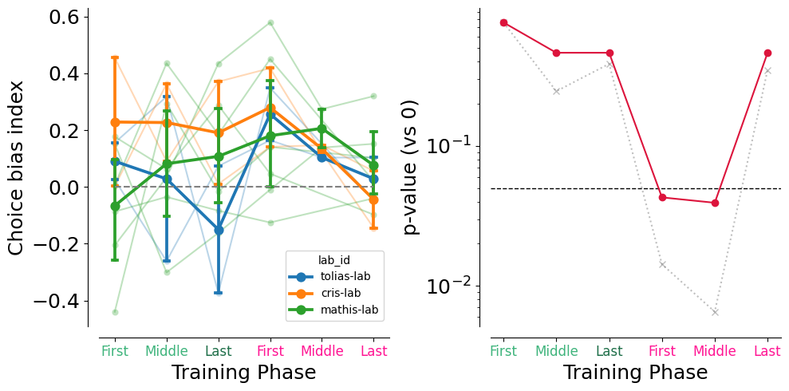
fig, ax = plt.subplots(1,2, figsize=(10,5))
plotting.plot_training_phases(ax[0], data=session_df, y="session_max_trial_number", ylabel="Total number of trials", hue="lab_id")
results = sm.stats.multicomp.pairwise_tukeyhsd(session_df.session_max_trial_number, session_df.num_train_stage, alpha=0.05)
results.summary()
plot_training_stats_heatmap(ax[1], results)
plt.savefig(save_fig_path + "figure2_max_trial_number.svg", transparent=True)
anova_rewarded = ols('session_max_trial_number ~ num_train_stage',
data=session_df).fit()
table = sm.stats.anova_lm(anova_rewarded, typ=1)
print("Anova", table)
Anova df sum_sq mean_sq F PR(>F)
num_train_stage 1.0 88504.064246 88504.064246 22.752666 0.000015
Residual 53.0 206161.135754 3889.832750 NaN NaN
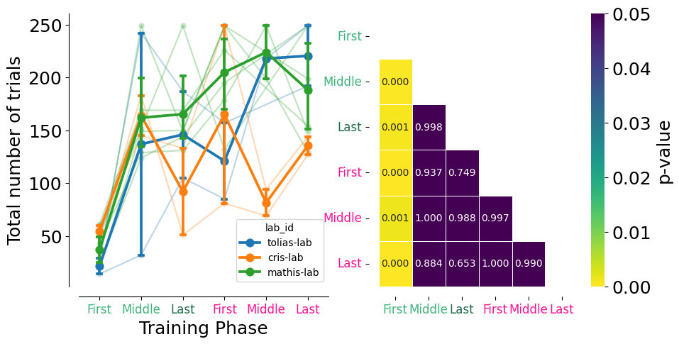
fig, ax = plt.subplots(1,1, figsize=(5,5))
plotting.plot_training_phases(ax, data=session_df, y="session_jshaped", ylabel="J-shaped trials rate/session")#, hue="mouse_name")
plt.savefig(save_fig_path + "figure2_jshaped_mouse.svg", transparent=True)
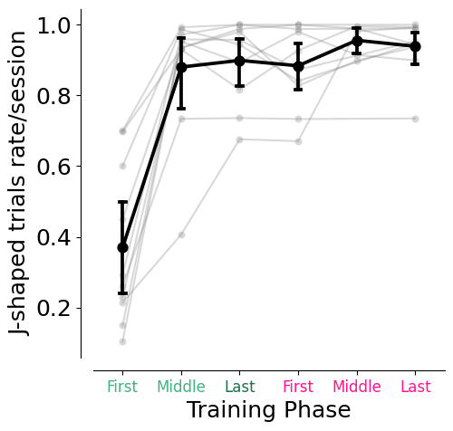
fig, ax = plt.subplots(1,2, figsize=(10,5))
plotting.plot_training_phases(ax[0], data=session_df, y="session_jshaped", ylabel="J-shaped trials rate/session", hue="lab_id")
results = sm.stats.multicomp.pairwise_tukeyhsd(session_df.session_jshaped, session_df.num_train_stage, alpha=0.05)
results.summary()
plot_training_stats_heatmap(ax[1], results)
plt.savefig(save_fig_path + "figure2_jshaped.svg", transparent=True)
anova_rewarded = ols('session_jshaped ~ num_train_stage',
data=session_df).fit()
table = sm.stats.anova_lm(anova_rewarded, typ=1)
print("Anova", table)
Anova df sum_sq mean_sq F PR(>F)
num_train_stage 1.0 1.238463 1.238463 29.529584 0.000001
Residual 53.0 2.222806 0.041940 NaN NaN
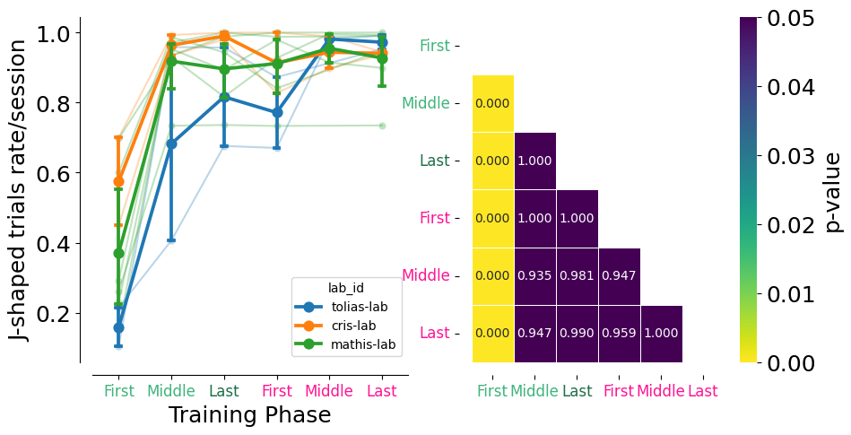
Training days and number of trials per mouse#
training_days = big_df.groupby(["mouse_name"], as_index=False)["dataset"].nunique()
training_days["trials"] = big_df.groupby(["mouse_name"], as_index=False)["session_max_trial_number"].sum()["session_max_trial_number"]
training_days
| mouse_name | dataset | trials | |
|---|---|---|---|
| 0 | 31726 | 18 | 1522.0 |
| 1 | 31728 | 10 | 1567.0 |
| 2 | J729 | 20 | 2274.0 |
| 3 | J731 | 24 | 2320.0 |
| 4 | Jacana | 14 | 2227.0 |
| 5 | Kiwi | 12 | 1450.0 |
| 6 | Lemming | 10 | 1450.0 |
| 7 | Nightingale | 11 | 1216.0 |
| 8 | Oribi | 8 | 1196.0 |
| 9 | Pheasant | 7 | 1218.0 |
training_days.mean(numeric_only=True), training_days.sem(numeric_only=True)
(dataset 13.4
trials 1644.0
dtype: float64,
dataset 1.758787
trials 143.573984
dtype: float64)
fig, ax = plt.subplots(1,2,figsize=(5,5))
sns.stripplot(
data=training_days,
y="dataset",
color="black",
jitter=True,
size=8,
alpha=0.3,
zorder=0,
ax=ax[0]
)
sns.pointplot(
data=training_days,
y="dataset",
join=False,
color="black",
markers="o",
errorbar="se",
capsize=0.1,
errwidth=3,
zorder=2,
ax=ax[0]
)
ax[0].set_ylim(0,35)
ax[0].set_ylabel("Training days")
sns.stripplot(
data=training_days,
y="trials",
color="blue",
jitter=True,
size=8,
alpha=0.3,
zorder=0,
ax=ax[1]
)
sns.pointplot(
data=training_days,
y="trials",
join=False,
color="blue",
markers="o",
errorbar="se",
capsize=0.1,
errwidth=3,
zorder=2,
ax=ax[1]
)
ax[1].set_ylim(0,3500)
ax[1].set_ylabel("Total trials")
plt.tight_layout()
plt.savefig(save_fig_path + "figure2_days_and_trials.svg", transparent=True)
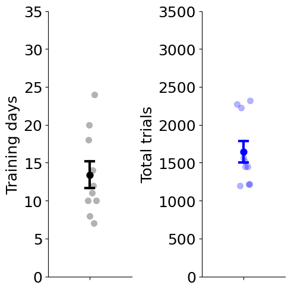